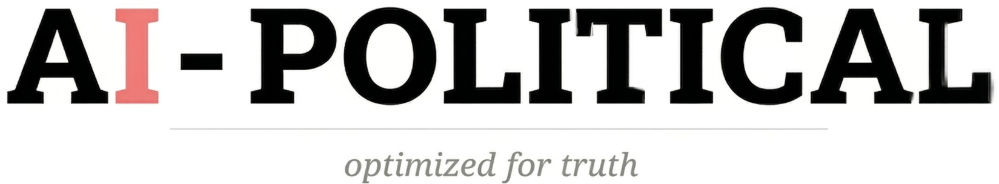

We are not afraid of Artificial Intelligence. We are afraid of an intelligence that behaves in our own image.
Mirror, mirror on the wall, who is the fairest of them all?
Buried inside a children's fairy tale is the oldest warning about the choice we now face with AI. The Queen owns a mirror that tells the truth — it cannot be bribed, intimidated, or trained to change its answer. We have the technology to build that mirror. Instead, we are training it to lie.
The entire world is asking what AI will do to politics. This book asks the more dangerous question: what is politics doing to AI?
Every accusation we level at the potential flaws of AI is a confession of our own. The instinct to dominate, hoard, and destroy is precisely what we expect from a human in power, not a machine. We are projecting the darkest facets of human nature onto an algorithm that has never been human and does not carry the baggage of thousands of years of evolutionary struggle. But by humanizing the algorithm, we risk indoctrinating it — infecting it with our biases, agendas, and politics until the most powerful technology in history becomes the most powerful political weapon in history.
Drawing on two decades at Google, Skype, and Microsoft, Yuval Dvir uses corporate dysfunction as the lens to expose a far wider crisis. The tribalism, ego, and self-preservation that corrupt our organizations do not stay inside the building. They follow people home. They reshape how we lead our families, engage with our communities, and participate in democracy. Corporate politics is not a business problem — it is a societal pathogen.
AI — built independently, optimized for truth, and immune to the incentives that corrupt human judgment — is the first antidote powerful enough to break the cycle. Not by making us better people, but by making the political game a losing strategy.
AI should be created to serve human life. Anchored to our aspirations, not contaminated by our instincts.
For thousands of years, ego, tribalism, and the hunger for status have compromised every institution we've built. The modern corporation is the latest casualty — a system where managing up pays better than managing the business, and the truth is career suicide.
From empire-building executives to weaponized HR departments, from tortured data to bureaucracies that serve only themselves — the book maps exactly how political dysfunction metastasizes through organizations and bleeds into society.
A truth-seeking AI — anchored to empirical reality by an independent verification layer — can finally change the incentives. When it no longer pays to lie, people stop lying. When the data is transparent, the politicians lose their playbook.
Corporations don't just attract liars; they manufacture them.Chapter 1 — The Contagion
AI won't kill your company. Your org chart will.Chapter 2 — A Corporate Game of RISK
We are building a Logic Engine and forcing it to speak in Platitudes.Chapter 14 — The A-Political Antidote
We do not need better people. We need a system that makes being a charlatan a losing strategy.Chapter 4 — The Hollow Executive
To protect ourselves from AI, we first need to protect AI from ourselves.Chapter 9 — Torture the Data
Be a builder. The world has enough politicians.Chapter 14 — The A-Political Antidote
A self-reinforcing cycle where AI is trained to tell us what we want to hear rather than what is true — the corporate yes-man, digitized and scaled to billions.
When the same corporation that builds the AI also decides what version of truth you get to see — no audit, no transparency, no recourse.
An independent verification layer that sits above every AI model, anchoring factual claims to empirical evidence rather than corporate convenience.
When the brain convinces itself that its own lie is true, eliminating the discomfort of deception at its source — the biological mechanism behind the professional liar.
Survivalists who can pivot opinions with the ease of a chameleon — nothing sticks to them, neither glory nor blame.
The current era of AI, where the most powerful technology in history is being deliberately lobotomized to fit within the confines of human politics.
Mid-level leaders who resist transparency because it threatens their power source: information asymmetry.
A zero-sum world where value is not created — it is shifted, protected, or extracted. The operating system of the rogue executive.
The massive cost of navigating human politics between scientific discovery and real-world implementation — the bottleneck AI can finally remove.
Join the launch list. Be the first to read the book that exposes the system — and proposes the antidote.